pacman::p_load(ggstatsplot, plotly, DT, scales, tidyverse, readxl, SmartEDA, skimr, corrplot, readxl, ggdist, ggridges, ggthemes, colorspace, scales, nortest, easystats, tidymodels)Take Home Exercise 03
The goal of this exercise is to:
perform Exploratory Data Analysis (EDA) and Confirmatory Daa Analysis (CDA) on the data sets namely Weather, Dengue Cases and Electricity Consumption.
based on the outcome of EDA and CDA to determine the parameters and outputs that will be exposed on the shiny applications and
to select appropriate Shiny UI components for exposing the parameters determine above
Data sets:
The following data sets were used for this exercise:
The climate data set was being scraped from Meteorological Service Website, Singapore using beautiful soup python package.
The scraped historical daily weather records in Singapore were then combined using python into one csv file and loaded in R Studio.
The dengue data sets were provided at the courtesy of the National Environment Agency (NEA), Singapore.
The data set is also publicly available on NEA website and Ministry of Health website.
Libraries:
The following libraries were used for this take home exercise.
Data Preparation Process:
The preliminary data preparation for the data sets were detailed in [project webpage] (https://isss608jan25group7.netlify.app/shiny/data_prep).
Using the pre-prepared data, this section will transform the weather data so that EDA and CDA could be performed in the subsequent steps.
For this part of the analysis, it will focus on the time period from 2014 to Jun 2024. This is to aligned to the availability of data time period from other data sets, the dengue data set is available from 2014 to 2024 and electricity consumption is available from 2005 to Jun 2024.
Hence the common period is from 2014 to June 2024. we would be using this common period.
Although the weather station at changi has the most completed dataset,
Weather Data:
The following code chuck is to read the weather data.
weather <- read_rds('data/Ex03/rds/weather.rds')skim(weather)The list of the active weather stations are are found in this link: https://www.weather.gov.sg/wp-content/uploads/2024/08/Station_Records.pdf
Based on the above summary table, we noted that there are a lot of missing data. with reference to the weather stations data records, 16 weather stations were selected. The names of the selected weather stations were listed in the code chunk below.
filtered_weather <- filter(weather,
Date >= as.Date("2014-01-01") &
Date <= as.Date("2024-06-30") &
Station %in% c('Admiralty','Ang Mo Kio', 'Changi',
'Choa Chu Kang (south)', 'Clementi',
'East Coast Parkway', 'Jurong (West)',
'Marina Barrage','Newton',
'Paya Lebar', 'Sembawang',
'Pasir Panjang', 'Seletar',
'Tai Seng','Tengah','Tuas South'))%>%
filter(MinTemperature >= 15)Use summary function to view the filtered weather
summary (filtered_weather)The following code chunk is used to aggreate the data together at monthly dimension.
weather_Monthly <- filtered_weather %>%
group_by(Year, Month) %>%
summarize(
AvgMeanTemp = mean(MeanTemperature, na.rm = TRUE),
MaxTemp = max(MaxTemperature, na.rm = TRUE),
MinTemp = min(MinTemperature, na.rm = TRUE),
total_rainfall=sum(DailyRainfall,na.rm=TRUE),
Highest30minRainfall=max(Highest30minRainfall,na.rm=TRUE),
Highest60minRainfall=max(Highest60minRainfall, na.rm=TRUE),
Highest120minRainfall=max(Highest120minRainfall, na.rm=TRUE)
)The following code chuck is to aggreate the yearly data together.
2024 data are being dropped as the electricity consumption data for 2024 is incomplete
weather_Yearly <- filtered_weather %>%
group_by(Year) %>% # Group by Year only
summarize(
AvgMeanTemp = mean(MeanTemperature, na.rm = TRUE),
MaxTemp = max(MaxTemperature, na.rm = TRUE),
MinTemp = min(MinTemperature, na.rm = TRUE),
total_rainfall = sum(DailyRainfall, na.rm = TRUE),
Highest30minRainfall = max(Highest30minRainfall, na.rm = TRUE),
Highest60minRainfall = max(Highest60minRainfall, na.rm = TRUE),
Highest120minRainfall = max(Highest120minRainfall, na.rm = TRUE)
)%>%
filter(Year != 2024) Data Preparation for the dengue data
The dengue data set was provided at the courtesy of the National Environment Agency (NEA), Singapore.
The data set is also publicly available on NEA website and Ministry of Health website.
Monthly_dengue <-read_xlsx("data/Ex03/Denguecases.xlsx", "Monthly")The following code is to transform the data to longer format, year and months columns to numeric.
Monthly_dengue_longer <- Monthly_dengue %>%
pivot_longer(
cols = 2:12,
names_to = "Year",
values_to = "denguecases"
) %>%
filter(!str_detect(`Month/Year`, "Total")) %>%
rename(Month = `Month/Year`) %>%
mutate(
Year = as.numeric(Year),
Month = as.numeric(Month)
)The following code chunk is to derive the yearly dengue cases.
yearly_dengue <- Monthly_dengue_longer %>%
filter(Year != 2024) %>%
group_by(Year) %>%
summarise(denguecases=sum(denguecases))
colnames(yearly_dengue)The population data is available at the following data link.
Based on the National Centre for Infectious Diseases article, the dengue incidence rate is being normalised by population, and transformed to the number of dengue cases per 100, 000 population.
This is usually only applicable total number of dengue cases reported yearly.
population <- read_xlsx("data/Ex03/population.xlsx", "Population")
population$Year <- as.numeric(population$Year)
population$Population <- as.numeric(population$Population)
yearly_dengue <- yearly_dengue %>% left_join(population, by = "Year")
yearly_dengue$dengueincidencerate <-yearly_dengue$denguecases/yearly_dengue$Population*100000Data Preparation for the Electricity consumption data.
The electricity consumption data set is available at this link.
Normalizing the total electricity consumption per household.
The data set were extracted and joined with the number of Households in Singapore. The Households data is available at this link.
# Load Monthly electricity data
Monthly_electricity <- read_xlsx("data/Ex03/electricityconsumption_DS.xlsx", "Monthly")
Monthly_electricity$Year <- as.numeric(Monthly_electricity$Year)
Monthly_electricity$Monthly_Elec_consump <- as.numeric(Monthly_electricity$Monthly_Elec_consump)
# Check column names
colnames(Monthly_electricity)[1] "Year" "Month" "Monthly_Elec_consump"# Load Households data
Households <- read_xlsx("data/Ex03/Households.xlsx", "Households")
Households$Year <- as.numeric(Households$Year)
Households$NoofHouseholds <- as.numeric(Households$NoofHouseholds)
# Check column names
colnames(Households)[1] "Year" "NoofHouseholds"# Combine datasets and calculate electricity consumption per household
Monthly_electricity <- Monthly_electricity %>%
left_join(Households, by = "Year") %>%
mutate(Monthly_Elec_per_Household = Monthly_Elec_consump / NoofHouseholds)yearly_electricity <-read_xlsx("data/Ex03/electricityconsumption_DS.xlsx", "Yearly")# Load yearly electricity data
yearly_electricity <- read_xlsx("data/Ex03/electricityconsumption_DS.xlsx", "Yearly")
yearly_electricity$Year <- as.numeric(yearly_electricity$Year)
yearly_electricity$Yearly_Elec_consump <- as.numeric(yearly_electricity$Yearly_Elec_consump)
# Load households data
Households <- read_xlsx("data/Ex03/Households.xlsx", "Households")
Households$Year <- as.numeric(Households$Year)
Households$NoofHouseholds <- as.numeric(Households$NoofHouseholds)
# Combine datasets and calculate yearly electricity consumption per household
yearly_electricity <- yearly_electricity %>%
left_join(Households, by = "Year") %>%
mutate(
Yearly_Elec_per_Household = Yearly_Elec_consump / NoofHouseholds
)Combining data sets
The code chunks below is for combining the various data sets, both the monthly and the year version will be written to rds.
combined_Monthly_data <- Monthly_dengue_longer %>%
left_join(weather_Monthly, by = c("Year", "Month")) %>%
left_join(Monthly_electricity, by = c("Year", "Month"))%>%
filter(!is.na(Monthly_Elec_consump)) %>%
select(-NoofHouseholds)write_rds(combined_Monthly_data, file = "data/Ex03/rds/combined_Monthly_data.rds")combined_Monthly_data <- read_rds("data/Ex03/rds/combined_Monthly_data.rds")combined_Yearly_data <- yearly_dengue %>%
left_join(weather_Yearly, by = c("Year")) %>%
left_join(yearly_electricity, by = c("Year"))%>%
select(-Population, -NoofHouseholds)write_rds(combined_Yearly_data, file = "data/Ex03/rds/combined_Yearly_data.rds")combined_Yearly_data <- read_rds("data/Ex03/rds/combined_Yearly_data.rds")Exploratory Data Analysis (EDA)
Distribution of of the data
Histograms
library(tidyr)
library(dplyr)
# Ensure all numeric columns are selected (excluding non-numeric ones like "Year" or "Month")
long_data <- combined_Monthly_data %>%
pivot_longer(cols = where(is.numeric), names_to = "Variable", values_to = "Value")
# Create faceted histogram for all continuous variables
ggplot(long_data, aes(x = Value)) +
geom_histogram(binwidth =1, fill = "lightblue", color = "black", alpha = 0.7) +
theme_minimal() +
facet_wrap(~ Variable, scales = "free") +
labs(title = "Histograms of All Continuous Variables", x = "Value", y = "Frequency")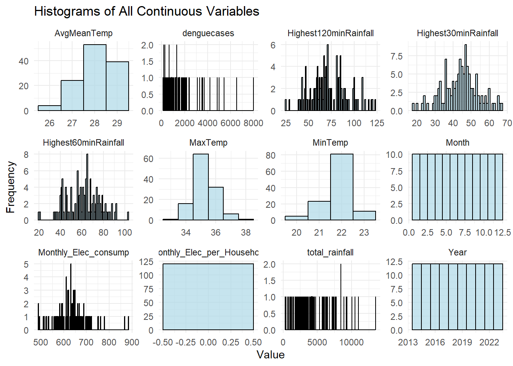
ggplot(combined_Monthly_data, aes(x = total_rainfall)) +
geom_histogram(aes(y = ..density..), bins = 30, fill = "lightblue", color = "black", alpha = 0.7) +
stat_function(fun = dnorm, args = list(mean = mean(combined_Monthly_data$total_rainfall, na.rm = TRUE),
sd = sd(combined_Monthly_data$total_rainfall, na.rm = TRUE)),
color = "red", size = 1) +
labs(title = "Histogram with Normal Curve", x = "Total Rainfall", y = "Density") +
theme_minimal()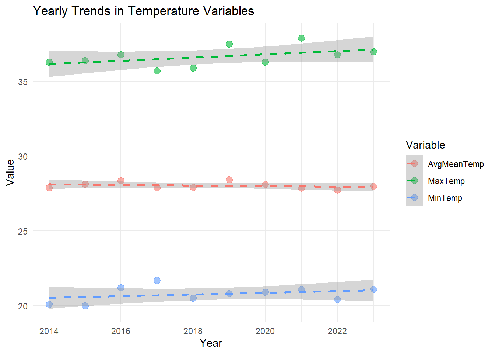
ggplot(combined_Monthly_data, aes(x = Highest30minRainfall)) +
geom_histogram(aes(y = ..density..), bins = 30, fill = "lightblue", color = "black", alpha = 0.7) +
stat_function(fun = dnorm, args = list(mean = mean(combined_Monthly_data$Highest30minRainfall, na.rm = TRUE),
sd = sd(combined_Monthly_data$Highest30minRainfall
, na.rm = TRUE)),
color = "red", size = 1) +
labs(title = "Histogram with Normal Curve", x = "Highest 30min Rainfall", y = "Density") +
theme_minimal()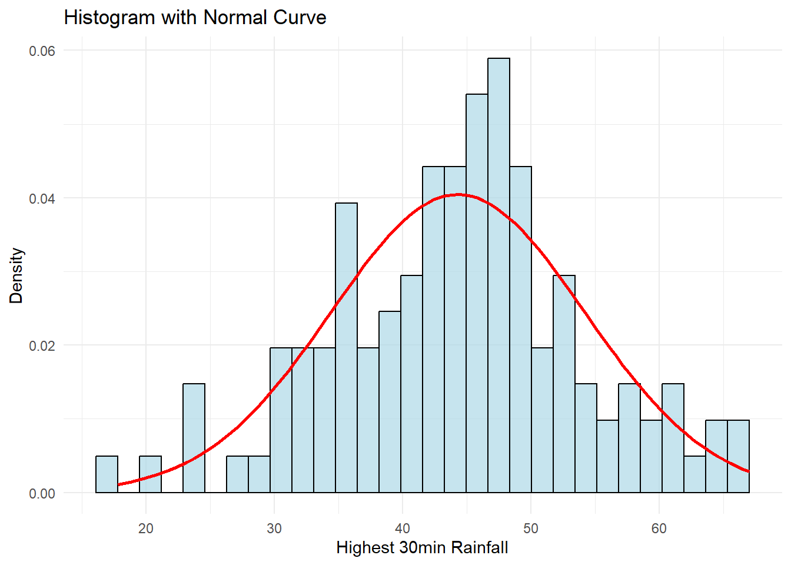
ggplot(combined_Monthly_data, aes(x = Highest60minRainfall)) +
geom_histogram(aes(y = ..density..), bins = 30, fill = "lightblue", color = "black", alpha = 0.7) +
stat_function(fun = dnorm, args = list(mean = mean(combined_Monthly_data$Highest60minRainfall, na.rm = TRUE),
sd = sd(combined_Monthly_data$Highest60minRainfall, na.rm = TRUE)),
color = "red", size = 1) +
labs(title = "Histogram with Normal Curve", x = "Highest 60min Rainfall", y = "Density") +
theme_minimal()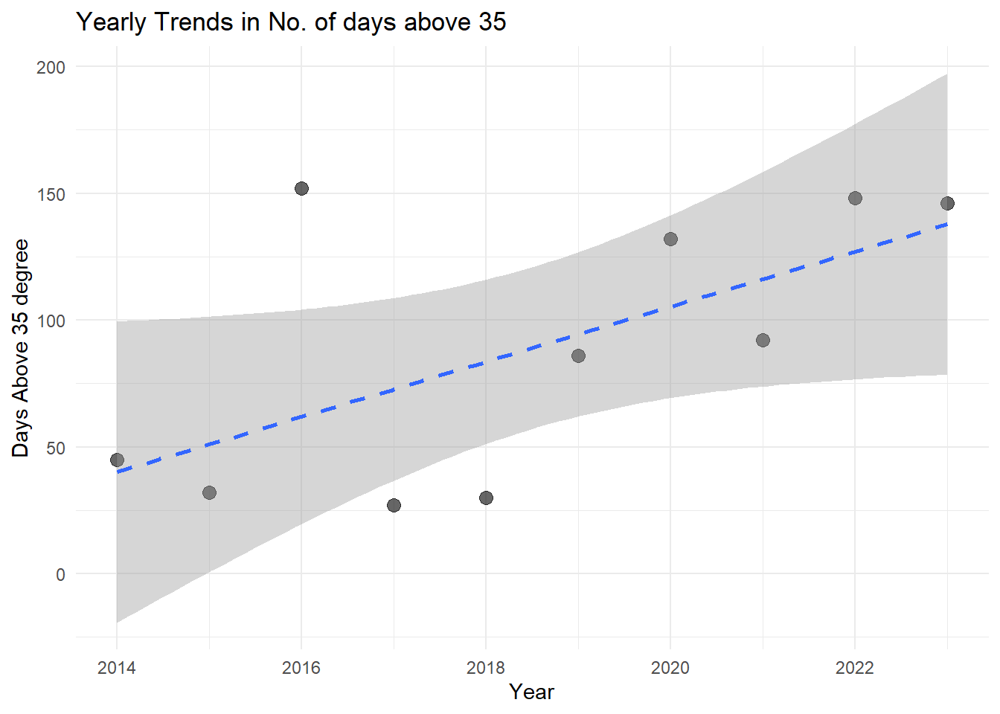
ggplot(combined_Monthly_data, aes(x = Highest120minRainfall)) +
geom_histogram(aes(y = ..density..), bins = 30, fill = "lightblue", color = "black", alpha = 0.7) +
stat_function(fun = dnorm, args = list(mean = mean(combined_Monthly_data$Highest120minRainfall, na.rm = TRUE),
sd = sd(combined_Monthly_data$Highest120minRainfall, na.rm = TRUE)),
color = "red", size = 1) +
labs(title = "Histogram with Normal Curve", x = "Highest 120min Rainfall", y = "Density") +
theme_minimal()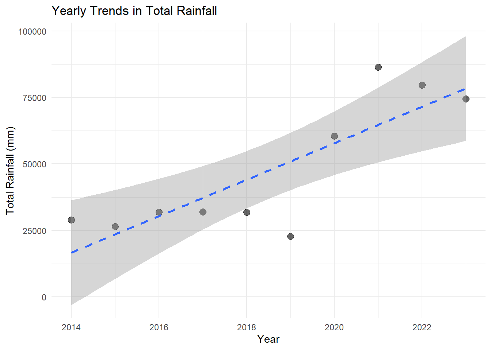
ggplot(combined_Monthly_data, aes(x = Monthly_Elec_consump)) +
geom_histogram(aes(y = ..density..), bins = 30, fill = "lightblue", color = "black", alpha = 0.7) +
stat_function(fun = dnorm, args = list(mean = mean(combined_Monthly_data$Monthly_Elec_consump, na.rm = TRUE),
sd = sd(combined_Monthly_data$Monthly_Elec_consump, na.rm = TRUE)),
color = "red", size = 1) +
labs(title = "Histogram with Normal Curve", x = "Monthly Electricity Consumption", y = "Density") +
theme_minimal()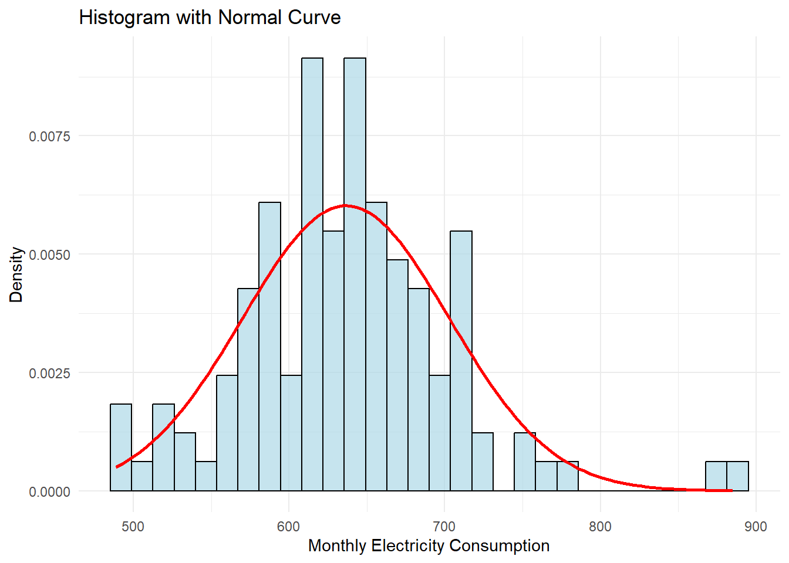
ggplot(combined_Monthly_data, aes(x = denguecases)) +
geom_histogram(aes(y = ..density..), bins = 30, fill = "lightblue", color = "black", alpha = 0.7) +
stat_function(fun = dnorm, args = list(mean = mean(combined_Monthly_data$denguecases, na.rm = TRUE),
sd = sd(combined_Monthly_data$denguecases, na.rm = TRUE)),
color = "red", size = 1) +
labs(title = "Histogram with Normal Curve", x = "Dengue cases", y = "Density") +
theme_minimal()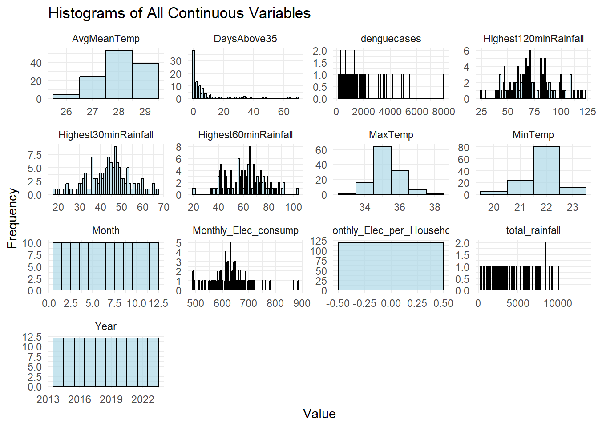
summary (combined_Monthly_data) Month Year denguecases AvgMeanTemp
Min. : 1.00 Min. :2014 Min. : 136.0 Min. :25.94
1st Qu.: 3.75 1st Qu.:2016 1st Qu.: 399.8 1st Qu.:27.55
Median : 6.50 Median :2018 Median : 890.0 Median :28.13
Mean : 6.50 Mean :2018 Mean :1228.4 Mean :28.02
3rd Qu.: 9.25 3rd Qu.:2021 3rd Qu.:1447.2 3rd Qu.:28.56
Max. :12.00 Max. :2023 Max. :8001.0 Max. :29.25
MaxTemp MinTemp total_rainfall Highest30minRainfall
Min. :33.30 Min. :20.0 Min. : 330 Min. :17.80
1st Qu.:34.80 1st Qu.:21.6 1st Qu.: 2035 1st Qu.:37.70
Median :35.40 Median :22.0 Median : 3202 Median :44.80
Mean :35.33 Mean :21.9 Mean : 3960 Mean :44.28
3rd Qu.:35.70 3rd Qu.:22.3 3rd Qu.: 5830 3rd Qu.:49.65
Max. :37.90 Max. :23.4 Max. :13505 Max. :67.00
Highest60minRainfall Highest120minRainfall Monthly_Elec_consump
Min. : 20.00 Min. : 25.40 Min. :488.7
1st Qu.: 49.60 1st Qu.: 59.35 1st Qu.:594.1
Median : 62.70 Median : 69.60 Median :635.6
Mean : 61.22 Mean : 71.89 Mean :636.4
3rd Qu.: 71.85 3rd Qu.: 84.45 3rd Qu.:671.1
Max. :102.60 Max. :122.80 Max. :885.0
Monthly_Elec_per_Household
Min. :0.0003859
1st Qu.:0.0004514
Median :0.0004821
Mean :0.0004800
3rd Qu.:0.0005080
Max. :0.0006448 Correlation between the various variables.
ggstatsplot::ggcorrmat(
data = combined_Monthly_data,
cor.vars = 3:12)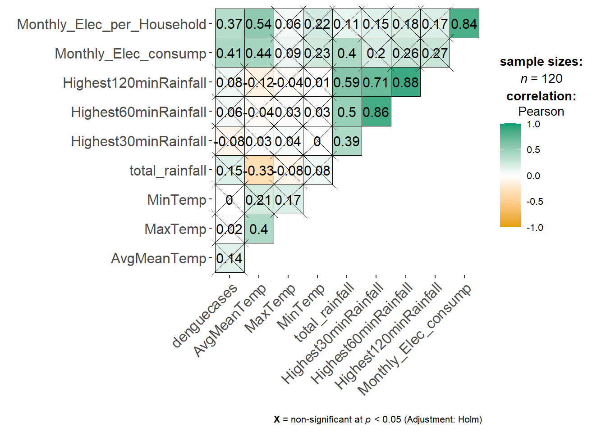
ggstatsplot::ggcorrmat(
data = combined_Yearly_data,
cor.vars = 2:12)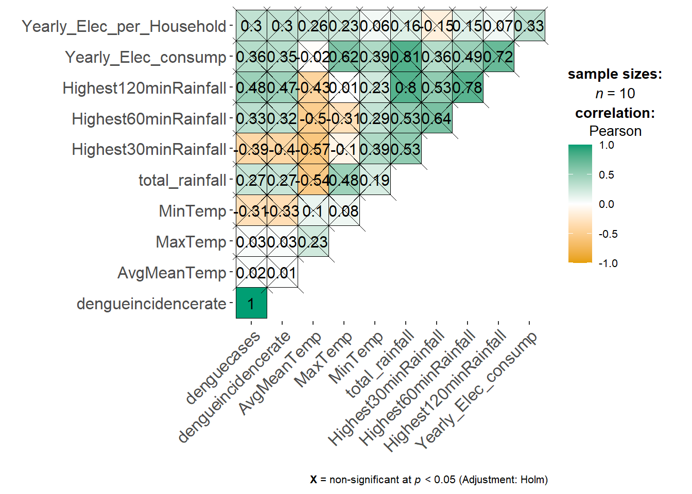
Distribution of the data
Ridgelines of variables
combined_Monthly_data$Year <- as.factor(combined_Monthly_data$Year)
ggplot(combined_Monthly_data,
aes(x = AvgMeanTemp,
y = Year)) + # Ensure 'Year' is correctly mapped to y-axis
geom_density_ridges(
scale = 3,
rel_min_height = 0.01,
bandwidth = 3.4,
fill = lighten("#7097BB", 0.3), # Adjust fill color
color = "white"
) +
scale_x_continuous(
name = "Monthly Mean Temperature",
expand = c(0, 0)
) +
scale_y_discrete(
name = NULL,
expand = expansion(add = c(0.2, 2.6))
) +
theme_ridges()
# Perform both Shapiro-Wilk and Anderson-Darling tests for each year
normality_results <- combined_Monthly_data %>%
group_by(Year) %>%
summarise(
Shapiro_p = shapiro.test(AvgMeanTemp)$p.value, # Shapiro-Wilk test p-value
Anderson_p = ad.test(AvgMeanTemp)$p.value # Anderson-Darling test p-value
) %>%
mutate(
Shapiro_Result = ifelse(Shapiro_p > 0.05, "Normal", "Not Normal"), # Interpretation
Anderson_Result = ifelse(Anderson_p > 0.05, "Normal", "Not Normal") # Interpretation
)
# View combined results
print(normality_results)# A tibble: 10 × 5
Year Shapiro_p Anderson_p Shapiro_Result Anderson_Result
<fct> <dbl> <dbl> <chr> <chr>
1 2014 0.753 0.690 Normal Normal
2 2015 0.274 0.358 Normal Normal
3 2016 0.408 0.529 Normal Normal
4 2017 0.200 0.179 Normal Normal
5 2018 0.156 0.266 Normal Normal
6 2019 0.0745 0.137 Normal Normal
7 2020 0.953 0.920 Normal Normal
8 2021 0.0612 0.127 Normal Normal
9 2022 0.889 0.637 Normal Normal
10 2023 0.130 0.102 Normal Normal ggplot(combined_Monthly_data,
aes(x = MaxTemp,
y = Year)) +
geom_density_ridges(
scale = 3,
rel_min_height = 0.01,
bandwidth = 3.4,
fill = lighten("#7097BB", 0.3),
color = "white"
) +
scale_x_continuous(
name = "Monthly Max Temperature",
expand = c(0, 0)
) +
scale_y_discrete(
name = NULL,
expand = expansion(add = c(0.2, 2.6))
) +
theme_ridges()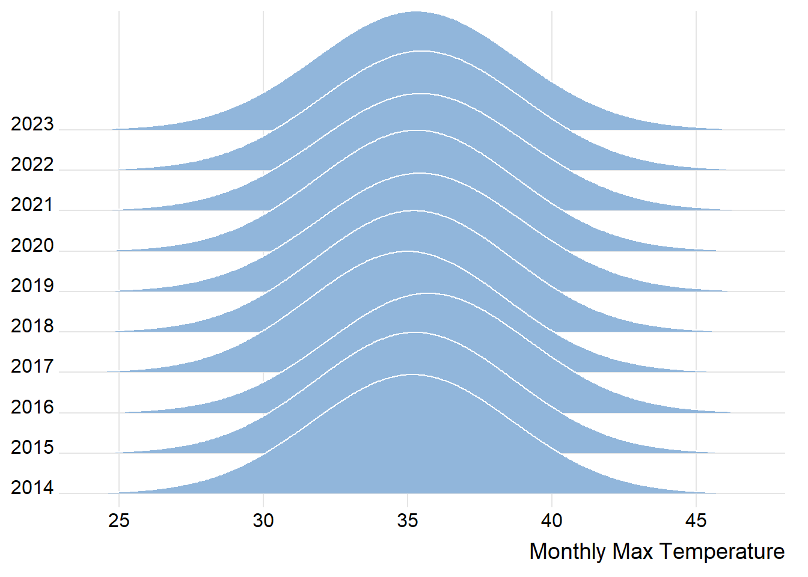
# Perform both Shapiro-Wilk and Anderson-Darling tests for each year
normality_results <- combined_Monthly_data %>%
group_by(Year) %>%
summarise(
Shapiro_p = shapiro.test(MaxTemp)$p.value, # Shapiro-Wilk test p-value
Anderson_p = ad.test(MaxTemp)$p.value # Anderson-Darling test p-value
) %>%
mutate(
Shapiro_Result = ifelse(Shapiro_p > 0.05, "Normal", "Not Normal"), # Interpretation
Anderson_Result = ifelse(Anderson_p > 0.05, "Normal", "Not Normal") # Interpretation
)
# View combined results
print(normality_results)# A tibble: 10 × 5
Year Shapiro_p Anderson_p Shapiro_Result Anderson_Result
<fct> <dbl> <dbl> <chr> <chr>
1 2014 0.770 0.763 Normal Normal
2 2015 0.499 0.388 Normal Normal
3 2016 0.696 0.579 Normal Normal
4 2017 0.915 0.936 Normal Normal
5 2018 0.988 0.927 Normal Normal
6 2019 0.530 0.353 Normal Normal
7 2020 0.878 0.837 Normal Normal
8 2021 0.300 0.127 Normal Normal
9 2022 0.801 0.808 Normal Normal
10 2023 0.469 0.403 Normal Normal ggplot(combined_Monthly_data,
aes(x = MinTemp,
y = Year)) +
geom_density_ridges(
scale = 3,
rel_min_height = 0.01,
bandwidth = 3.4,
fill = lighten("#7097BB", 0.3),
color = "white"
) +
scale_x_continuous(
name = "Monthly Min Temperature",
expand = c(0, 0)
) +
scale_y_discrete(
name = NULL,
expand = expansion(add = c(0.2, 2.6))
) +
theme_ridges()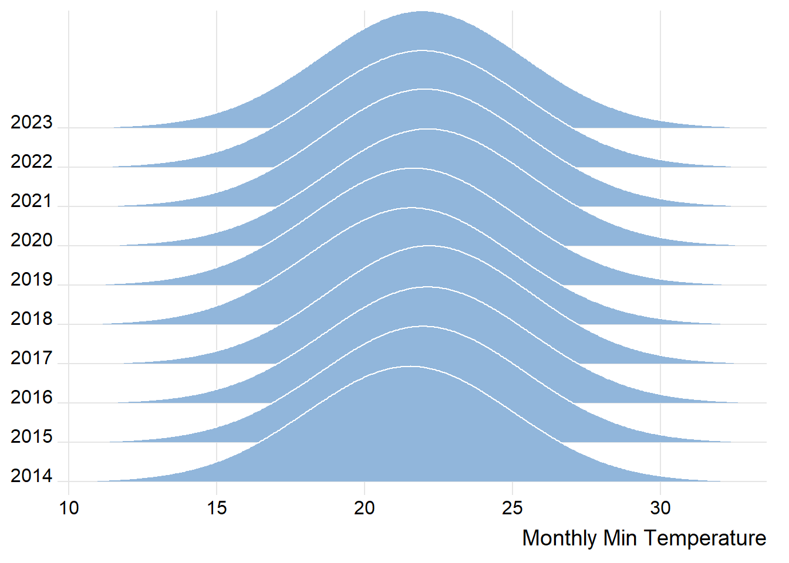
# Perform both Shapiro-Wilk and Anderson-Darling tests for each year
normality_results <- combined_Monthly_data %>%
group_by(Year) %>%
summarise(
Shapiro_p = shapiro.test(MinTemp)$p.value, # Shapiro-Wilk test p-value
Anderson_p = ad.test(MinTemp)$p.value # Anderson-Darling test p-value
) %>%
mutate(
Shapiro_Result = ifelse(Shapiro_p > 0.05, "Normal", "Not Normal"), # Interpretation
Anderson_Result = ifelse(Anderson_p > 0.05, "Normal", "Not Normal") # Interpretation
)
# View combined results
print(normality_results)# A tibble: 10 × 5
Year Shapiro_p Anderson_p Shapiro_Result Anderson_Result
<fct> <dbl> <dbl> <chr> <chr>
1 2014 0.0432 0.0659 Not Normal Normal
2 2015 0.0151 0.0400 Not Normal Not Normal
3 2016 0.379 0.384 Normal Normal
4 2017 0.0836 0.125 Normal Normal
5 2018 0.634 0.673 Normal Normal
6 2019 0.644 0.586 Normal Normal
7 2020 0.330 0.361 Normal Normal
8 2021 0.976 0.848 Normal Normal
9 2022 0.217 0.135 Normal Normal
10 2023 0.835 0.887 Normal Normal One-Way Anova
combined_Monthly_data$total_rainfall <- as.numeric(combined_Monthly_data$total_rainfall)
combined_Monthly_data <- combined_Monthly_data %>%
filter(!is.na(total_rainfall))ggbetweenstats(
data = combined_Monthly_data,
x = Year,
y = total_rainfall,
type = "np", # Non-Parametric ANOVA, Parameteric - p
mean.ci = TRUE, # Display mean and confidence interval
pairwise.comparisons = TRUE, # Perform pairwise tests
pairwise.display = "significant", # Show only significant pairs
p.adjust.method = "fdr", # Adjust for multiple comparisons
messages = FALSE # Suppress additional messages
)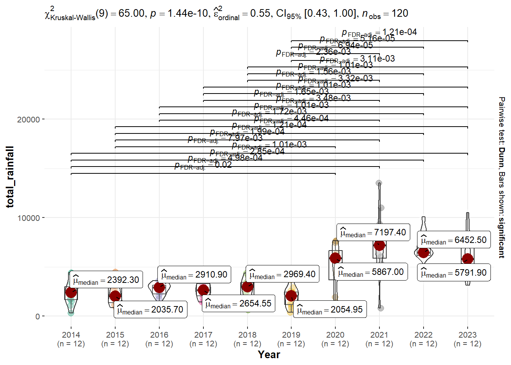
ggbetweenstats(
data = combined_Monthly_data,
x = Year,
y = MaxTemp,
type = "p", # Non-Parametric ANOVA, Parameteric - p
mean.ci = TRUE, # Display mean and confidence interval
pairwise.comparisons = TRUE, # Perform pairwise tests
pairwise.display = "significant", # Show only significant pairs
p.adjust.method = "fdr", # Adjust for multiple comparisons
messages = FALSE # Suppress additional messages
)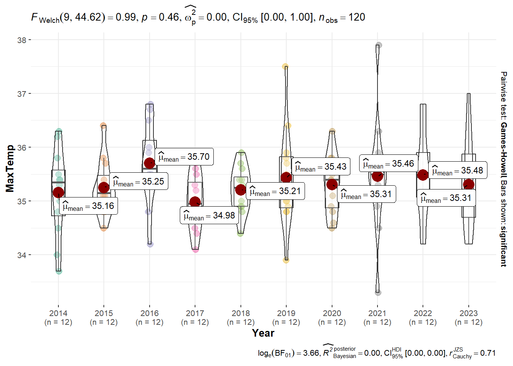
ggbetweenstats(
data = combined_Monthly_data,
x = Year,
y = denguecases ,
type = "Np", # Non-Parametric ANOVA, Parameteric - p
mean.ci = TRUE, # Display mean and confidence interval
pairwise.comparisons = TRUE, # Perform pairwise tests
pairwise.display = "significant", # Show only significant pairs
p.adjust.method = "fdr", # Adjust for multiple comparisons
messages = FALSE # Suppress additional messages
)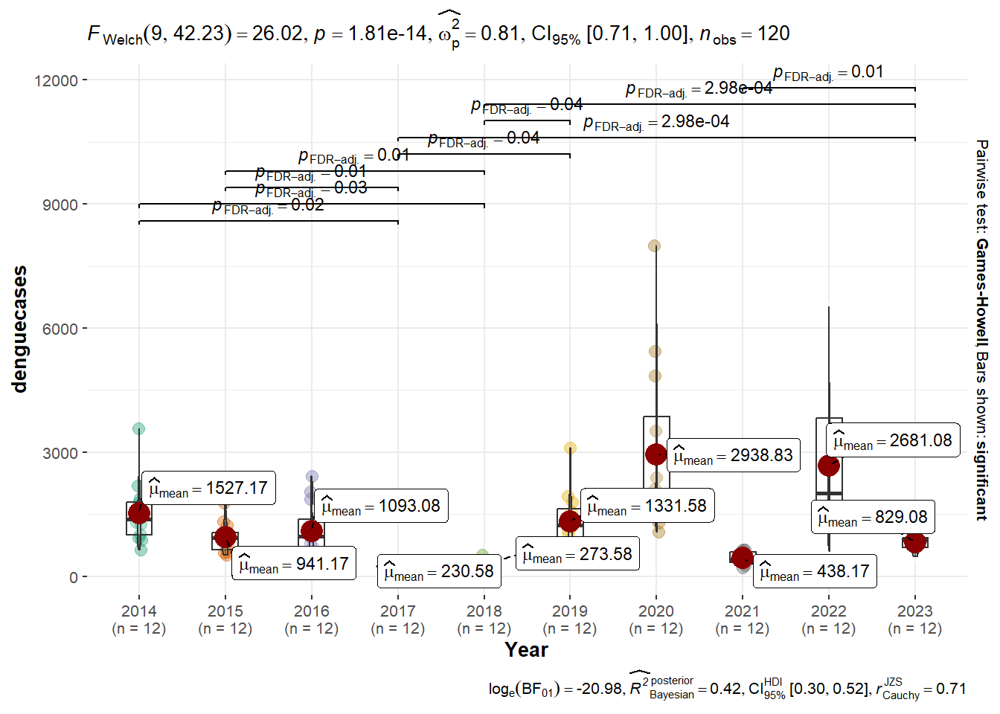
ggbetweenstats(
data = combined_Monthly_data,
x = Year,
y = Monthly_Elec_consump,
type = "np", # Non-Parametric ANOVA, Parameteric - p
mean.ci = TRUE, # Display mean and confidence interval
pairwise.comparisons = TRUE, # Perform pairwise tests
pairwise.display = "significant", # Show only significant pairs
p.adjust.method = "fdr", # Adjust for multiple comparisons
messages = FALSE # Suppress additional messages
)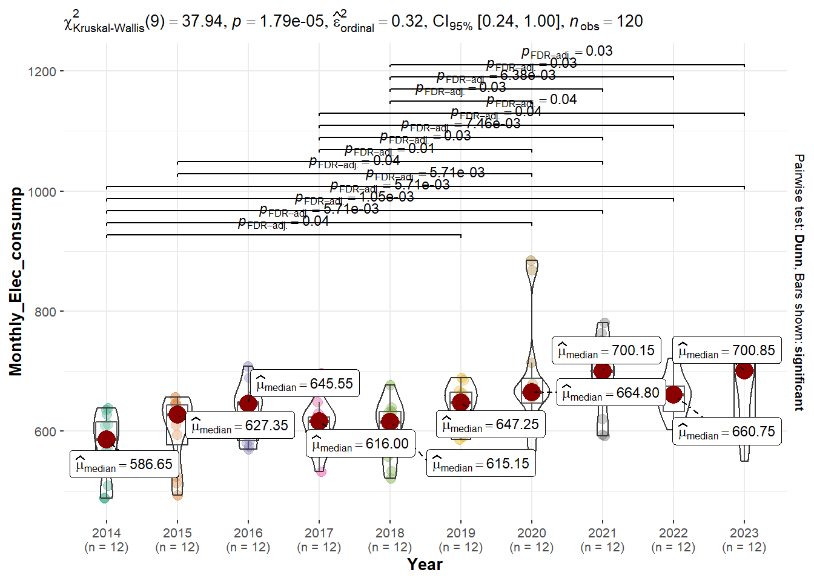
Multi-linear regression
colnames(combined_Monthly_data) [1] "Month" "Year"
[3] "denguecases" "AvgMeanTemp"
[5] "MaxTemp" "MinTemp"
[7] "total_rainfall" "Highest30minRainfall"
[9] "Highest60minRainfall" "Highest120minRainfall"
[11] "Monthly_Elec_consump" "Monthly_Elec_per_Household"model_health <- lm(denguecases ~ MaxTemp + MinTemp + AvgMeanTemp+ Highest30minRainfall+ Highest60minRainfall + Highest120minRainfall , data = combined_Monthly_data)
summary(model_health)
Call:
lm(formula = denguecases ~ MaxTemp + MinTemp + AvgMeanTemp +
Highest30minRainfall + Highest60minRainfall + Highest120minRainfall,
data = combined_Monthly_data)
Residuals:
Min 1Q Median 3Q Max
-1686.2 -777.6 -349.0 309.1 6266.0
Coefficients:
Estimate Std. Error t value Pr(>|t|)
(Intercept) -4042.043 6810.808 -0.593 0.55405
MaxTemp -84.736 171.349 -0.495 0.62190
MinTemp -97.471 192.511 -0.506 0.61362
AvgMeanTemp 385.532 180.815 2.132 0.03516 *
Highest30minRainfall -70.668 23.995 -2.945 0.00392 **
Highest60minRainfall 38.498 22.709 1.695 0.09278 .
Highest120minRainfall 5.116 12.927 0.396 0.69302
---
Signif. codes: 0 '***' 0.001 '**' 0.01 '*' 0.05 '.' 0.1 ' ' 1
Residual standard error: 1270 on 113 degrees of freedom
Multiple R-squared: 0.1037, Adjusted R-squared: 0.05613
F-statistic: 2.179 on 6 and 113 DF, p-value: 0.05003check_collinearity(model_health)# Check for Multicollinearity
Low Correlation
Term VIF VIF 95% CI Increased SE Tolerance
MaxTemp 1.21 [1.07, 1.64] 1.10 0.83
MinTemp 1.06 [1.00, 2.20] 1.03 0.94
AvgMeanTemp 1.26 [1.10, 1.68] 1.12 0.80
Highest30minRainfall 4.13 [3.14, 5.59] 2.03 0.24
Highest120minRainfall 4.83 [3.64, 6.57] 2.20 0.21
Tolerance 95% CI
[0.61, 0.94]
[0.45, 1.00]
[0.60, 0.91]
[0.18, 0.32]
[0.15, 0.27]
Moderate Correlation
Term VIF VIF 95% CI Increased SE Tolerance
Highest60minRainfall 9.19 [6.77, 12.62] 3.03 0.11
Tolerance 95% CI
[0.08, 0.15]check_c_health <- check_collinearity(model_health)
plot(check_c_health)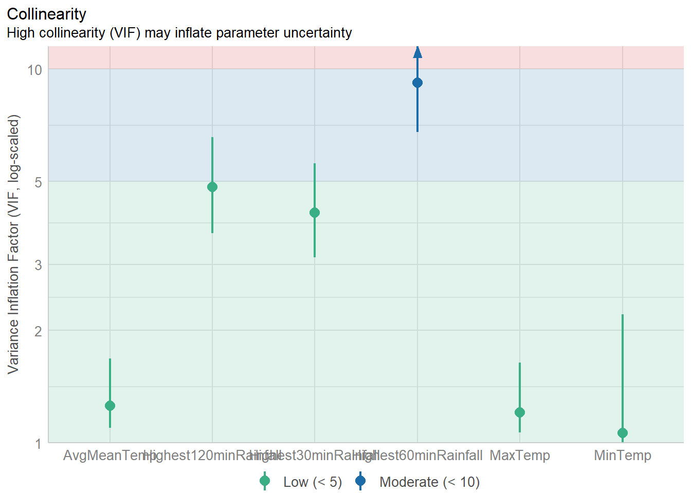
Removed 60 mins Rainfll data die to multicollinearity
model_health <- lm(denguecases ~ MaxTemp + MinTemp + AvgMeanTemp+ Highest30minRainfall + Highest120minRainfall , data = combined_Monthly_data)
summary(model_health)
Call:
lm(formula = denguecases ~ MaxTemp + MinTemp + AvgMeanTemp +
Highest30minRainfall + Highest120minRainfall, data = combined_Monthly_data)
Residuals:
Min 1Q Median 3Q Max
-1426.3 -740.9 -317.0 214.7 6515.1
Coefficients:
Estimate Std. Error t value Pr(>|t|)
(Intercept) -5341.726 6822.916 -0.783 0.4353
MaxTemp -63.337 172.282 -0.368 0.7138
MinTemp -74.587 193.609 -0.385 0.7008
AvgMeanTemp 383.419 182.291 2.103 0.0376 *
Highest30minRainfall -41.923 17.117 -2.449 0.0158 *
Highest120minRainfall 21.606 8.584 2.517 0.0132 *
---
Signif. codes: 0 '***' 0.001 '**' 0.01 '*' 0.05 '.' 0.1 ' ' 1
Residual standard error: 1280 on 114 degrees of freedom
Multiple R-squared: 0.08093, Adjusted R-squared: 0.04062
F-statistic: 2.008 on 5 and 114 DF, p-value: 0.08278check_model(model_health)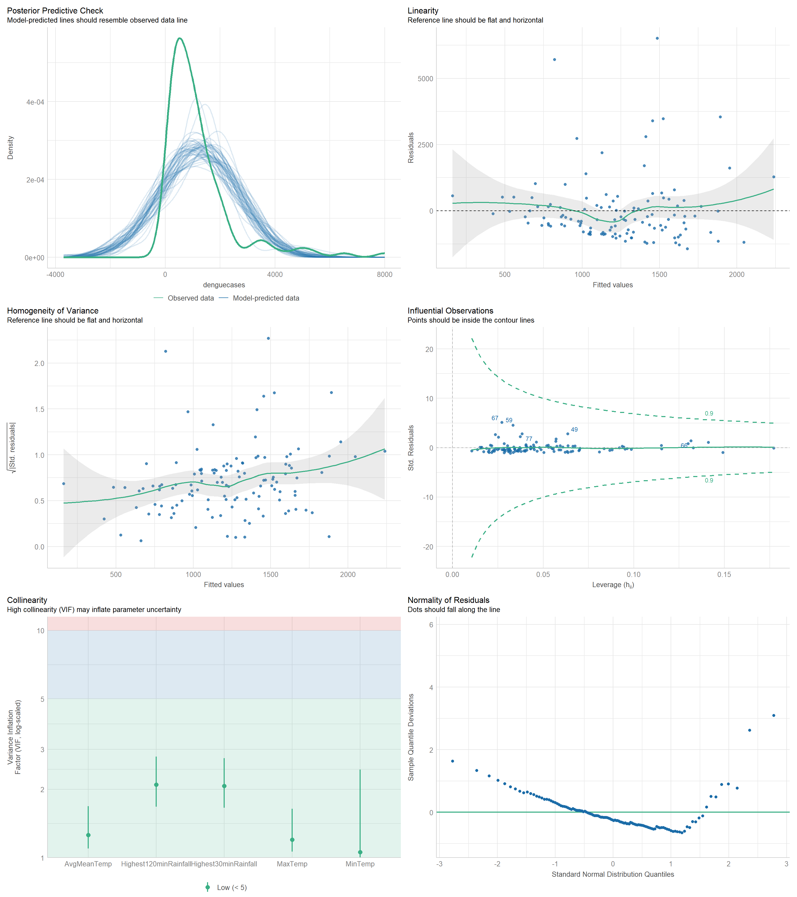
model_elec <- lm(Monthly_Elec_consump ~ MaxTemp + MinTemp + AvgMeanTemp+ Highest30minRainfall+ Highest60minRainfall + Highest120minRainfall , data = combined_Monthly_data)
summary(model_elec)
Call:
lm(formula = Monthly_Elec_consump ~ MaxTemp + MinTemp + AvgMeanTemp +
Highest30minRainfall + Highest60minRainfall + Highest120minRainfall,
data = combined_Monthly_data)
Residuals:
Min 1Q Median 3Q Max
-116.93 -38.01 -5.09 24.84 232.05
Coefficients:
Estimate Std. Error t value Pr(>|t|)
(Intercept) -687.0746 297.7437 -2.308 0.0228 *
MaxTemp -10.1754 7.4907 -1.358 0.1770
MinTemp 14.4465 8.4159 1.717 0.0888 .
AvgMeanTemp 46.3414 7.9046 5.863 4.6e-08 ***
Highest30minRainfall -0.6473 1.0490 -0.617 0.5384
Highest60minRainfall 0.1667 0.9928 0.168 0.8669
Highest120minRainfall 1.2033 0.5651 2.129 0.0354 *
---
Signif. codes: 0 '***' 0.001 '**' 0.01 '*' 0.05 '.' 0.1 ' ' 1
Residual standard error: 55.51 on 113 degrees of freedom
Multiple R-squared: 0.3323, Adjusted R-squared: 0.2969
F-statistic: 9.374 on 6 and 113 DF, p-value: 2.437e-08check_c_elec <- check_collinearity(model_elec)
plot(check_c_elec)model_elec <- lm(Monthly_Elec_consump ~ MaxTemp + MinTemp + AvgMeanTemp+ Highest30minRainfall + Highest120minRainfall , data = combined_Monthly_data)
summary(model_elec)
Call:
lm(formula = Monthly_Elec_consump ~ MaxTemp + MinTemp + AvgMeanTemp +
Highest30minRainfall + Highest120minRainfall, data = combined_Monthly_data)
Residuals:
Min 1Q Median 3Q Max
-117.63 -38.03 -5.61 24.57 233.13
Coefficients:
Estimate Std. Error t value Pr(>|t|)
(Intercept) -692.7030 294.5877 -2.351 0.020418 *
MaxTemp -10.0827 7.4385 -1.355 0.177943
MinTemp 14.5456 8.3593 1.740 0.084550 .
AvgMeanTemp 46.3323 7.8706 5.887 4.04e-08 ***
Highest30minRainfall -0.5228 0.7390 -0.707 0.480776
Highest120minRainfall 1.2747 0.3706 3.439 0.000815 ***
---
Signif. codes: 0 '***' 0.001 '**' 0.01 '*' 0.05 '.' 0.1 ' ' 1
Residual standard error: 55.28 on 114 degrees of freedom
Multiple R-squared: 0.3322, Adjusted R-squared: 0.3029
F-statistic: 11.34 on 5 and 114 DF, p-value: 6.835e-09check_model(model_elec)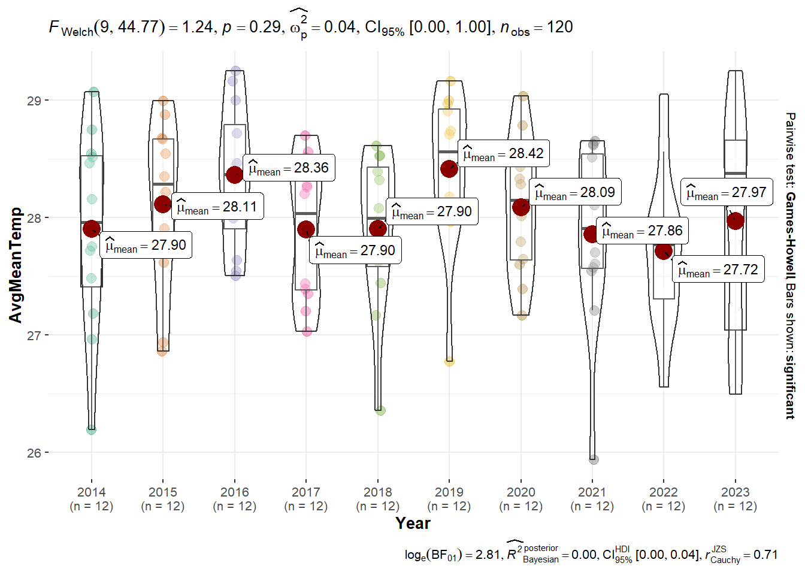
Disclaimer
This take home exercise was done with reference to methods in Prof Kam’s e text book https://r4va.netlify.app/ , materials on R available online and the use of Microsoft co-pilot to troubleshoot syntax errors and streamline codes.